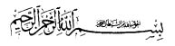

Büyük Dua’nın Türkçe Okunuşu

Bismillahirrahmanirrahiym
1) Allahümme Yâ Hayyû, yâ Kayyûm, bike tehassantu fahmin-î bi himâyet-î kifâyet-î vikâyet-î hakîkat-î burhân-î hırz-î emân-î “Bismillâhi” (Fatiha/1)
2) Ve adhilnî Yâ Evvelû, Yâ Ahirû, meknû’el ğaybî sırr-ı dâiret-î kenz-î “Mâşâallâhû lâ kuvvete illâ bîllahî” (Kefh/39)
3) Ve esbül a’leyye Yâ Halîmü, Yâ Settâru, kenef-e setr-i hicâb-î sıyânet-î necât-î “Vet’tesımû bihablîllâhi” (Alî İmrân/103)
4) Vebnî Yâ muhîtû, Yâ Kâdirü, a’leyye sûre emân-î ihâtat-î mecd-î sürâdik-î i’zz-î a’zamet-î “Zâlike hayrûn zâlike min âyâtîllâhi” (A’raf/26)
5) Ve ei’znî Yâ Rakıbû, Yâ Mucîba, vahrusnî fi nefsî ve dînî ve ehlî ve mâlî ve veledî, ve dârî, fein vâlidî bi kelâet-î iğâset-î lâzet-i “Ve mâ hüm bi darrine bihî min ahadin illâ biiznîllâhi” (Bakara/102)
6) Ve kınî Yâ Mâniû’, Yâ Nafiû’, bi âyatike ve esmâ-îke ve kelimât-ike şerr-eşşeytân vessultan ve zâlimin ve cebbârin biğa a’leyye “Ahâzetuhû ğâşiyetün min a’zâbîllâh” (Yusuf/107)
7) Ve neccinî Yâ Muzill, Yâ Muntekim, min a’bîdîke-zzâlimin el bâğine a’leyye ve e’vânîhîm fe in hemme lî ahadun minhüm bi sûin hazelehûllâhû ve hateme a’lâ semîhî ve kalbihî ve cea’le a’lâ basarihî ğişâveten “Femen yehdîyhî min ba’dillâh” (Casiye/23)
8) Vekfinî Yâ Kâbiz, Yâ Kahhâr, hadîa’te mekr-îhîm vardudhûm a’nnî mezmûmîne medhûrîne bi takhsîr-î tağyîr-î tedmîr-î “Fe mâ kâne lehû min fi’etin yensurûnehû min dûn’îllâh”. (Kasas/81)
9) Veeziknî Yâ Subbûh, Yâ Kuddûs, lezzet-e münâcât-i “Akbil velâ tehaf, inneke minel’âminîne bi fadzîllâhi”. (Kasas/31)
10) Ve ezikhûn Yâ Dârr, Yâ Mumît, nikâl-u vebâl-î zevâl-î “Fe kuti’a dâbir’ul kavm’illezîne zalemû, velhamdülillâhi rabb’il â’lemîyn” (En’am/45)
11) Ve eminnî Yâ Selâm, Yâ Mü’min, savlet-e cevletti devlet-îl âdâ-î bi ğayât-î bidâyet-î ayet-î “Lehüm’ül büşrâ fi’l hayâtiddünyâ ve fil’âhiretî lâ tebdîle likelimâtillâh” (Yunus/64)
12) Ve tevvicnî Yâ A’zîm, Yâ Muiz’zzu, bi tâc-î mehâbet-î kibriyâ-î celâl-î sultân-î melekût-î i’zz-i a’zamet-î “Ve lâ yahzünke kavlühüm, inn’el İ’zzete lillâhi’ (Yunus/65)
13) Ve elbisnî Yâ Celîl, Yâ Kebir, hila’t-e celâl-î ikbâl-i ikmâl-î “Felemmâ ra’eynehû ekbernehû ve kataâ’ne eydiyehünne ve kulne hâşa lillâhî” (Yusuf/31)
14) Ve elki Yâ A’zîz, Yâ Vedûd, a’leyye mahabbeten minke hettâ tenkâd ve takhda’ lî bihâ kulûb-ü i’bâd-îke b-il mahabbeti ve-l mea’zzeti ve’l meveddeti min ta’tîf-î teltîf-î te’lîf-î “Yühibbûnehüm kehubbîllâh, vellezîne âmenû eşeddü hubben lillâh” (Bakara/165)
15) Ve Azhîr a’leyye Yâ Zâhiru, Yâ Bâtınu, âsâr’ü esrâr-i envâr-î “Yühibbuhum ve yühibbunehû ezilletin a’lâl mü’minîne ei’zzetin a’lâl kâfirîne yücâhidûne fî sebilillâhi” (Maide/45)
16) Ve veccih Allahümme Yâ Samed, Yâ Nûr, vechî bi safâ-î cemâl-î üns-î işâk-î “Fein hâccûke fekul eslemtü vechiye lillâh” (Âl-i imrân/20)
17) Ve cemmil’nî Yâ Bedîa’-ssemâvati ve’l arz Yâ Zelcelâli ve’l ikrâmi bi’l fesâhati ve’l belâğeti ve’l berâti “Vehlul u’kdeten min lisânî yefkahû kavlî” (Taha/27)
18) Bi rikkat-î ra’fet-î rahmet-î “Sümme telînü cülûdühüm ve kulûbühüm ila zikrîllâhi” (Zümer/23)
19) Ve kallidnî Yâ şedîd’el betşi Yâ Cebbâru, Yâ Kahharû, seyf’ül heybeti veş’şiddeti ve’l kuvveti ve’l mena’ti min be’si ve ceberût’î i’zzet’i “Ve me’nnasru illâ min i’ndi’llâhi” (Enfâl/10)
20) Ve edim a’leyye Yâ Bâsit, Yâ Fettâh, behcet’e meserret’i “Rabbişrah lî sadrîy ve yessirlîy emrî” (Tâ’hâ/25-26)
21) Biletâf’î a’vâtif’i “Elem neşrahleke sadrak” (İnşirâh/1)
22) Ve beşâirî “Yevmeizin yefreh’ul mü’minûne bi nasr’îllâh” (Rum/4,5)
23) Ve enzil’illâhümme Yâ Lâtîf, Yâ Raûf, bi kalbîy’el îmâne ve’l itminâne vessekînete liekûne min’ellezîne âmenû “Ve tatmainnu kulûbühüm bi-zikr’îllâh” (Ra’d/28)
24) Ve efriğ a’leyye Yâ Sabûr, Yâ Şekûr, sabr’ellezîne tedarra’û bi sebât’î yakîn’î temkîn’î “Kem min fietin kalîyletin ğalebet fieten kesîreten bi’iznîllâh” (Bakara/249)
25) Vahfeznî Yâ Hafîz, Yâ Vekîl, min beyn-i yedeyye ve min halfî vea’n yemînî ve a’n şimâlî ve min fevkî ve min tahtî bi vucûd-î şuhûd-î cunûd-î “Lehû mua’kibâtün min beyn’î yedeyhî ve min halfîhî yahfizûnehû min emrîllâh” (Râd/11)
26) Ve sebbit Allâhumme Yâ Sabitü, Yâ Kâimû, Yâ Dâimû, kademeyye kemâ sebeteel kâile “Ve keyfe ehâfu mâ eşrektum ve lâ tehâfûne enneküm eşrektüm billâh” (En’am/81)
27) Vensurnî Yâ Ni’mel Mevlâ ve Yâ Ni’me’nnasîr, a’lâ a’dâî nasr’ellezî kîle lehû “E’tet’tehizünâ hüzûven kâle e’ûzu billâh” (Bakara/67)
28) Ve eyyidnî Yâ Tâlib, Yâ Ğalib, bi te’yîd’î Nebiyy’ike Muhammedin Sallallahû A’leyhî ve Sellem el-mueyyedi bi’ta’zîz’î tevkîr’î “İnnâ erselnâke şâhiden mubeşşiren ve nezîren litu’minû billâh” (Fetih/8-9)
29) Ve ek fînî Yâ Kâfî, Yâ Şâfî, el ada vel esvâi vel edvâi bi a’vâid’i fevâid’i “Lev enzelnâ haz’el Kur’âne a’lâ cebelin lareeytehû hâşi’an mutesaddian min haşyet’illâhi” (Haşr/21)
30) Ve emnin a’leyye Yâ Vehhâb, Yâ Rezzâk, bi husûl-î vusûl-î kabûl-î teysî-î teshîr-i “Kulû veşrebû min rizkîllahî” (Bakara/60)
31) Ve fevellenî Yâ Velî, Yâ A’lîy, bil’vilâyeti vel i’nâyeti verriâ’yeti ves-selameti bi mezîd-î îrâd-î isâ’d-î imdâd-i “Zalike min fadzlîllâhi” (Yusuf/38)
32) Ve ekrimnî Yâ Ğâniyy, Yâ Kerîm, bis seâ’deti ves’siyâdeti vel kerâmeti vel mağfireti kemâ ekremte ellezîne yeğuddûne asvâtehum i’nde Rasûlûllâh ve tub a’leyye Yâ Tevvab, Yâ Hekîm, tevbeten nesûhen liekûne min’ellezîne “İzâ fea’lû fâhişeten ev zalemû enfuüsehûm zeker’ûllâhe festağferû lizünûbîhim ve men yağfir’uzzunûbe illâllah” (Al-i imrân/135)
33) Ve el zimnî Yâ Vâhid, Yâ Ahâd, kelimet’et takvâ kemâ elzemte Habîbeke Muhammeden Sallâllâhu A’leyhi ve Selleme haysu kulte “Fea’lem ennehû lâ ilâhe illâllâh” (Muhammed/19)
34) Ve ahtim lî Yâ Rahman, Ya Rahîym, bi husn’î hâtımet’ennâcîne ver râcîne “Kul yâ i’badiyellezîne esrefû a’lâ enfusihîm lâ taknetû min rahmet’îllâh” (Zümer/53)
35) Ve eskinnî Yâ Semî, Yâ Karîb, cennâti a’dn’ın yui’ddet lil muttekîn “Da’vâhum fihâ subhâneke’llahumme ve tahiyyatehum fîha selam ve âhiru da’vâhum enilhamdu lillâhi rabbilâlemiyn” (Yunus/10)